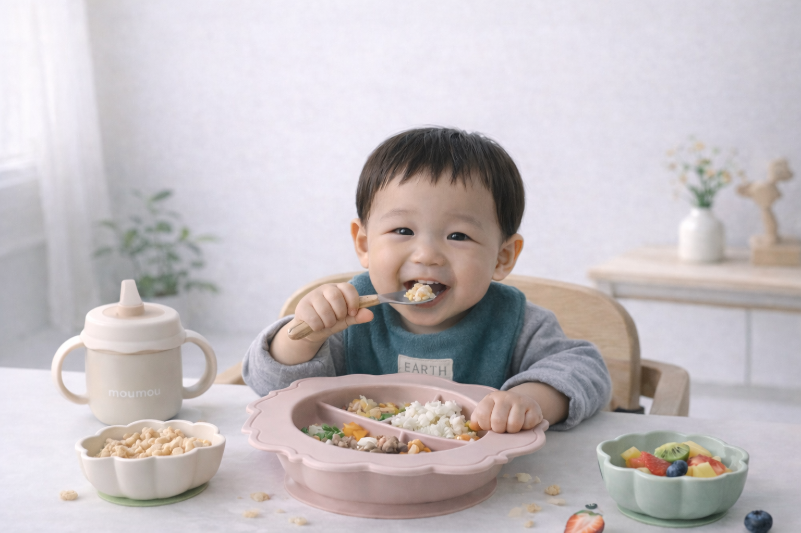

Our story
For Precious Mealtime Moments
작은 입에서 시작된 이름, moumou
“mou”는 프랑스어로 ‘입’을 뜻합니다. 오물오물, 천천히, 부드럽게..
작은 입으로 세상을 맛보는 아이들에게 식사 시간은 매일 반복되는 가장 즐거운 놀이여야 합니다. 부드러운 촉감과 따뜻한 디자인으로 아이의 오감을 깨우고, 엄마와 아빠에게는 여유로운 미소를 선물하는 곳. moumou는 세상에서 가장 부드러운 식탁을 만듭니다.

-
01. Soft Beginning
세상을 처음 맛보는 순간을, 가장 부드럽게
첫 이유식은 단순한 한 끼가 아니라 아이에게는 세상을 받아들이는 첫 경험입니다. moumou는 그 시작이 부담스럽지 않도록, 부드러운 촉감과 안정적인 형태로 아이의 첫 식사를 조용히 돕습니다.
-
02. Gentle Form
아이의 속도에 맞춘, 가장 조용한 디자인
아이의 손은 아직 작고, 움직임은 서툴고 천천히 배워갑니다. moumou의 둥근 곡선과 절제된 구조는 아이의 리듬을 방해하지 않도록 설계되었습니다. 디자인은 드러나기보다, 자연스럽게 스며들도록.
-
03. Precious Moments
오물오물 소리가, 오래 남는 기억이 되도록
식사는 배를 채우는 시간이 아니라 눈을 맞추고, 웃음을 나누는 시간이라 믿습니다. 오물오물 작은 입모양, 숟가락이 닿는 소리, 그 따뜻한 공기가 오래 기억되기를 바랍니다.